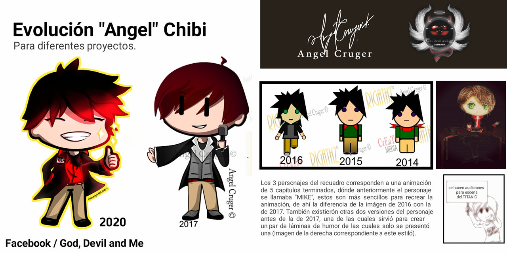
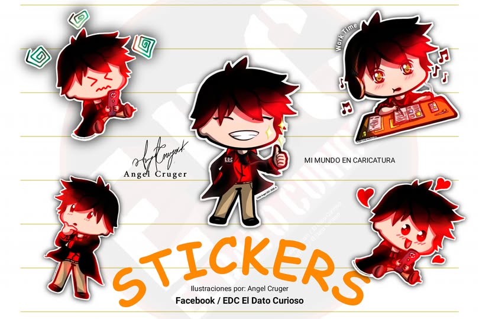
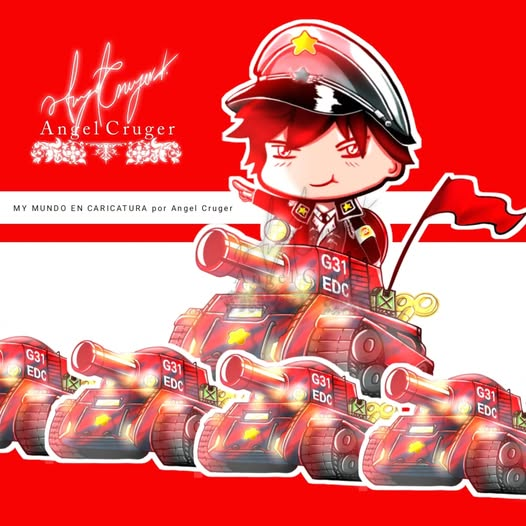
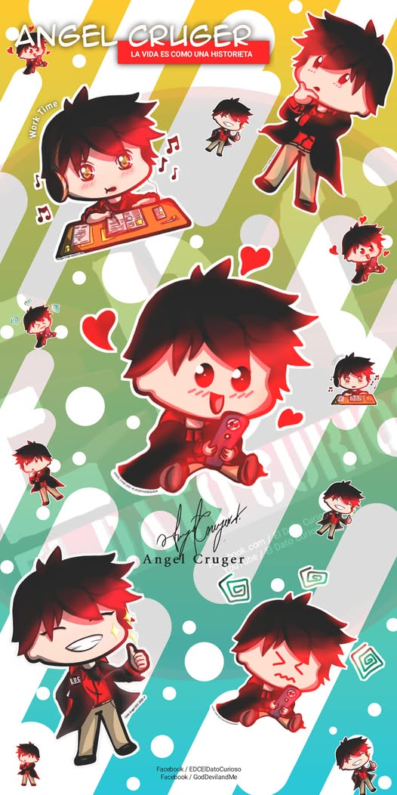

Red Rainbow es el personaje principal y la mascota oficial de Angel Curiosidades, creado por el Influencer y artista digital Angel Cruger.
El Personaje

El personaje ha tenido varias evoluciones a través de los años, destacando en una primera incursión en una animación creada —según el propio autor— en el programa Microsoft Publisher para animar videos cortos por allá de 2014. Desde entonces siempre se pensó como un personaje independiente hasta terminar por convertirse en la imagen comercial y el ícono del canal Angel Curiosidades, creado primero en el entorno personal de ilustración del Artista en Facebook: God, Devil and Me.
Originalmente tenía el nombre provisional que perduró por años según el autor, llamándolo Chibi, Ícono o dándole un nombre propio como Angel Chibi. Sin embargo, terminó por ser una entidad propia que requería su propio nombre lo que derivó en Red (por su cabello y colores básicos) pero no se ha aclarado el tema de Rainbow o su traducción al español, "Arcoíris", lo que ha generado la duda de si Angel terminó por hacer un guiño a la comunidad a manera de presentar un personaje o por algún tema referente a alguna de sus historias del Universo GDM.
Detalles y Apariciones

Red Rainbow es un personaje caracterizado por un estilo CHIBI, evolucionando de un estilo muy básico de producciones caseras, a ser algo más detallado casi como una caricatura de producción de estudio comercial. La estética del diseño cuidado y los rasgos son una clara muestra del avance técnico y capacidad del autor.
Se sabe que estuvo en producción a través de ONESTUDIOS (Estudio de producción personal de Angel Curiosidades fundado por Angel Cruger) una versión animada del personaje con uno o dos capítulos pero nunca fue presentado. Al igual que con otros proyectos de los que se conocen avances o muestras, los seguidores han criticado la falta de continuidad a los proyectos. Nunca se ha aclarado si se continuará o si se cancelaron.

Han surgido diferentes imágenes sobre el personaje, por lo que se cuenta con una base sólida de presentación. Aunque se ha mencionado la incursión de una nueva producción, en el ARTBOOK del autor publicado en su página de Facebook justo en la portada aparece el personaje, lo que ha levantado sospechas de dedicación de nuevos visuales.
Historia en el Universo GDM

A nivel narrativo y dentro del canon de las obras de su creador, Red Rainbow es un modelo utilizado en la historia de Las Crónicas de Arthelion, publicado en 2025.
Ha tenido participación dentro de otras serializaciones y es la base principal del canal y medio de difusión Angel Curiosidades desde 2017.
La imagen del personaje suele ser tierna, amigable y muy sonriente, sin embargo también existe información sobre contenido bélico y otros aspectos más maduros, como en la obra Arthelion de 2025.